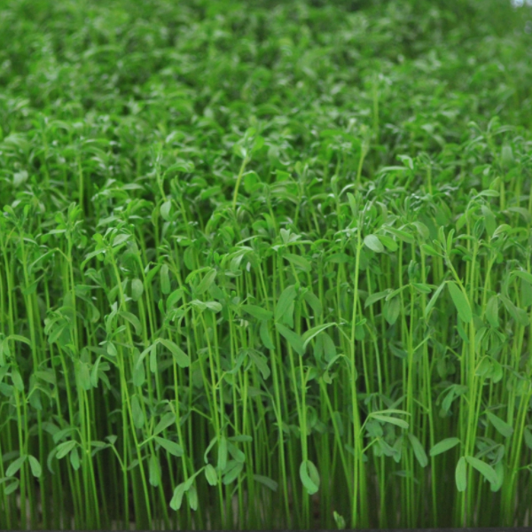

Microgreens
BIG NUTRIENTS in small packages
Created by Yogesh Kumar / @yoku_2010
Let's Start
- Introduction
- Health Benefits of Microgreens
- Seeds
- How to Grow Microgreens
- Common Microgreens Problems
- Microgreens in Kitchen
- Wrap Up
Section - I
Introduction
What is Microgreens?
A microgreen is that stage of a plant's growth when its first leaves appear.
Microgreens can be harvested when the germinated seeds have developed tiny roots and at least their first true leaves. Microgreens can provide a variety of leaf flavours, such as sweet and spicy. Microgreens are nutrient and flavour packed mini versions of full grown vegetables. They have similar health benefits to sprouts, but greater nutritional value.
Why it is called Super Food?
According to research, during the germination stage the cell division is much greater, thus increasing the amount of nutrients in one leaf. It's almost as if the microgreens are a concentrated version of their adult selves.
Another idea is that during the germination stage nutrients are just beginning to be activated and released. Through photosynthesis, the cotyledon(s) provide initial food to give the plants a burst of energy for the true leaves to develop.
Microgreens vs Sprouts
- Microgreens are grown in soil; sprouts germinate in water.
- The leaves and stems of microgreens can be eaten; the "stem" and seed of sprouts can be eaten.
- Microgreens take around one to three weeks to grow, depending on the variety; sprouts take under a week to grow.
- Microgreens are packed with flavor and are often used as garnishes; sprouts are great for crunch.
Why do we need to know how to grow them at home?
- It's easy to grow.
- It's Fresh & Healthy. Contain digestible vitamins, minerals and phytonutrients that provide nutritional health benefits.
- Many varieties will regrow and produce several harvests in same container, same soil, which is eco friendly process - fantastic value!
- No need for a garden.
- It grows fast and you get a quick harvest within 7-10 days.
Section - II
Health Benefits of Microgreens
Nutritional Punch
- Researchers found levels of four groups of vital nutrients, including vitamin K, vitamin C, vitamin E, lutein, and beta-carotene, in 25 different commercially grown microgreens.
- "These all nutrients are extremely important for skin, eyes, and fighting cancer.
- Microgreens are superior in nutritional value than the mature plants.
- Due to their high antioxidant content, microgreens are considered a functional food, a food that promotes health or prevents disease.
- Consuming plant-based foods of all kinds has been linked to a reduced risk of many health conditions, such as obesity, diabetes, heart disease, and high blood pressure.
- Micro greens spend very little time in the soil. So there is no real need for the use of pesticides and herbicides when growing them. That makes microgreens a very healthy vegetable option.
Section - III
Seeds
Amaranth
Seeds
After growing
| Hindi Name: | Ramdana or Rajgira or Cholai |
| Taste: | Slightly earthy |
| Health Benefits | Red Amaranth is rich in vitamin C, carotenoids, vitamin K and vitamin E. Green Amaranth contain Vitamin A, Vitamin C, Vitamin B6 and B9, Riboflavin, Niacin, Calcium, Omega 3 fatty acids, Iron, Phosphorous, Magnesium, Zinc, Sodium, Potassium, Copper, Manganese and many essential minerals and nutrients. It prevents skin problems, hair loss and anaemia. Improve digestion, Good for diabetes, Protect against cancer. |
| Germination: | 2-3 days |
| Harvest in: | 8-12 days |
Arugula
Seeds
After growing
| Hindi Name: | Gargeer |
| Taste: | Spicy |
| Health Benefits | Provides vitamin K, which helps in preventing blood clot etc in the body. |
| Germination: | 2-3 days |
| Harvest in: | 5-7 days |
Beet
Seeds
After growing
| Hindi Name: | Chukandar |
| Taste: | Sweet and Earthy |
| Health Benefits | Fights cancer, wonderful sources of vitamin C and iron, prevents inflammations, removes fatigue. |
| Germination: | 4-6 days |
| Harvest in: | 8-12 days |
Broccoli
Seeds
After growing
| Hindi Name: | Hari Phool Gobhi |
| Taste: | Cabbage flavor |
| Health Benefits | It is a very good source of dietary fiber, pantothenic acid, vitamin B6, vitamin E, manganese, phosphorus, choline, vitamin B1, vitamin A (in the form of carotenoids), potassium and copper. |
| Germination: | 3-4 days |
| Harvest in: | 5-7 days |
Red Cabbage
Seeds
After growing
| Hindi Name: | Laal Patta Gobhi |
| Taste: | Mild cabbage flavor |
| Health Benefits | Red cabbage microgreens could reduce risk of cardiovascular disease. |
| Germination: | 3-5 days |
| Harvest in: | 6-7 days |
Alfa Alfa
Seeds
After growing
| Hindi Name: | - |
| Taste: | Mild |
| Health Benefits | Alfalfa leaf contains essential vitamins including the entire spectrum of B-vitamins, A, D, E and K. It is a source of iron, niacin, biotin, folic acid, calcium. magnesium, phosphorus and potassium. |
| Germination: | 3-4 days |
| Harvest in: | 5-6 days |
Basil
Seeds
After growing
| Hindi Name: | Tulasee (Herb of the mint family) |
| Taste: | Potent |
| Health Benefits | Prevents inflammation |
| Germination: | 4-5 days |
| Harvest in: | 14-20 days |
Peas
Seeds
After growing

| Hindi Name: | Matar |
| Taste: | Sweet |
| Health Benefits | Promising seven times the vitamin C of blueberries and eight times the folic acid of bean sprouts. |
| Germination: | 3-5 days |
| Harvest in: | 5-7 days |
Celery
Seeds
After growing
| Hindi Name: | Ajavaayan |
| Taste: | Celery |
| Health Benefits | Helps regulating thyroid |
| Germination: | 5-7 days |
| Harvest in: | 14-17 days |
Chard
Seeds
After growing
| Hindi Name: | - |
| Taste: | Sweet |
| Health Benefits | Swiss chard contains high levels nitrates, which been shown to lower blood pressure, reduce the amount of oxygen needed during exercise and enhance athletic performance. |
| Germination: | 4-6 days |
| Harvest in: | 4-6 days |
Mustard
Seeds
After growing
| Hindi Name: | Sarso |
| Taste: | Spicy |
| Health Benefits | High levels of Antioxidants. Detoxifies your liver and blood. Helps lower cholesterol, packed with Phytonutrients High in Fiber, High in Bone-Building and Vitamin K. Good source of immune boosting Vitamin C, provides Skin & Eye health protection. |
| Germination: | 3-4 days |
| Harvest in: | 4-5 days |
Bok Choy
Seeds
After growing
| Hindi Name: | Chinese Patta Gobhi |
| Taste: | Sweet |
| Health Benefits | Vitamins and minerals include phosphorus, zinc, sodium, copper, manganese, selenium, niacin, folate (plays role in DNA synthesis and repair), choline, beta-carotene and vitamin K. |
| Germination: | 3-4 days |
| Harvest in: | 7-10 days |
Lentil
Seeds
After growing
| Hindi Name: | Masoor Dal |
| Taste: | Sweet |
| Health Benefits | Abundant sources of protein, excellent sources of dietary fiber, particularly soluble fiber. |
| Germination: | 4-5 days |
| Harvest in: | 7-10 days |
Green Gram
Seeds
After growing
| Hindi Name: | Mong Dal |
| Taste: | Sweet |
| Health Benefits | Lean Source of Protein, Nonmeat Source of Iron and helps in lower blood pressure and Weight control |
| Germination: | 2-3 days |
| Harvest in: | 4-5 days |
Chickpea
Seeds
After growing
| Hindi Name: | Chana |
| Taste: | Sweet |
| Health Benefits | Vitamins A, C and E, Calcium, Iron, Magnesium, Fiber, Phytonutrients, Amino Acids, Protein. |
| Germination: | 5-6 days |
| Harvest in: | 10-12 days |
Wheat Grass
Seeds
After growing
| Hindi Name: | Gehun ki Ghas |
| Taste: | Sweet |
| Health Benefits | It contains vitamins A, B-complex, C, E and K. It is extremely rich in protein, and contains 17 amino acids. It improves the digestion, excellent skin cleanser, great for blood disorders of all kinds. |
| Germination: | 3-5 days |
| Harvest in: | 10-12 days |
Section - IV
How to Grow Microgreens
Section - V
Common Microgreens Problems
Section - VI
Microgreens in Kitchen
Section - VII
Wrap Up